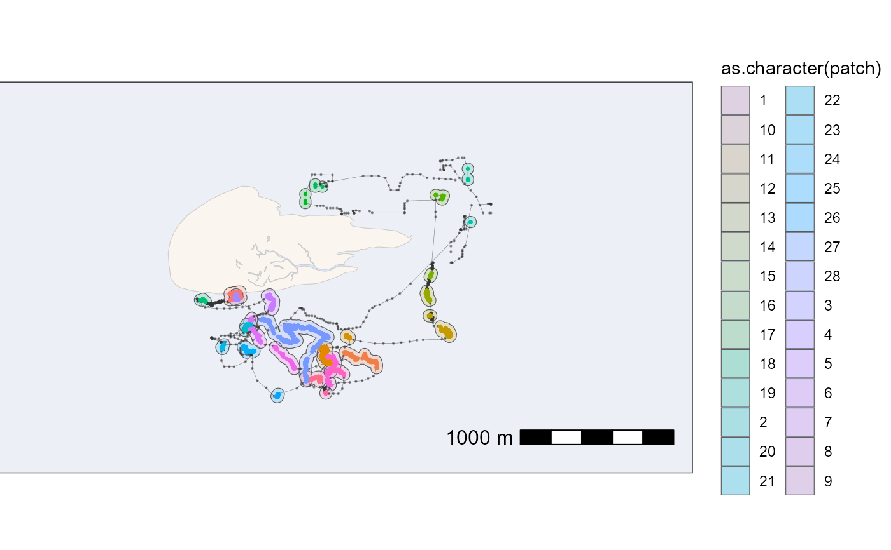

Convert a data.frame or data.table to an simple feature (sf) object
Source:R/fun_as_sf.R
atl_as_sf.RdThis function converts a data.frame or data.table to a simple feature (sf) object, allowing flexible specification of the x and y coordinate columns. Additional attributes can also be retained in the resulting sf object. There are four options = c("points", "lines", "table", "res_patches").
Usage
atl_as_sf(
data,
tag = "tag",
x = "x",
y = "y",
projection = sf::st_crs(32631),
additional_cols = NULL,
option = "points",
buffer
)Arguments
- data
A
data.tableor an object convertible to adata.table. The input data containing the coordinates and optional attributes.- tag
A character string representing the name of the column containing the tag ID.
- x
A character string representing the name of the column containing x-coordinates. Defaults to "x".
- y
A character string representing the name of the column containing y-coordinates. Defaults to "y".
- projection
An object of class
crsrepresenting the coordinate reference system (CRS) to assign to the resulting sf object. Defaults to EPSG:32631 (WGS 84 / UTM zone 31N).- additional_cols
A character vector specifying additional column names to include in the resulting sf object. Defaults to
NULL(no additional columns included).- option
A character string with "points" (default) for returning sf points, "lines" to return sf lines and "table" to return a table with a sf coordinates column or "res_patches" to return sf polygons with residency patches. For the latter, it is best to specify the buffer around points to half of
lim_spat_indepof the residency patch calculation. If not the function can create MULTIPOLGONS for single residency patches. That will give a warning message, but works if desired.- buffer
A numeric value (in meters) specifying the buffer around the polygon of each residency patch. This should be set to half of
lim_spat_indepof the residency patch calculation. If not the function can create MULTIPOLGONS for single residency patches. That will give a warning message, but works if desired.lim_spat_indepof the residency patch calculation.
Examples
# packages
library(tools4watlas)
library(ggplot2)
library(mapview)
# load example data
data <- data_example
### example "points" and "lines"
# subset data one tag and tide
data_subset <- data[tag == "3063" & tideID == "2023513"]
# make data spatial
d_sf <- atl_as_sf(
data_subset,
additional_cols = c("species", "datetime", "speed_in")
)
# add track
d_sf_lines <- atl_as_sf(
data_subset,
additional_cols = c("species", "datetime", "speed_in"),
option = "lines"
)
# plot interactive map
mapview(d_sf_lines, zcol = "speed_in", legend = FALSE) +
mapview(d_sf, zcol = "speed_in")
### example "lines"
### example "table"
# create sf table with spatial points
sf_table <- atl_as_sf(data, x = "x", y = "y", tag = "tag", option = "table")
sf_table
#> tag geometry
#> <char> <sfc_POINT>
#> 1: 3212 POINT (650151.6 5902407)
#> 2: 3158 POINT (649975 5902425)
#> 3: 3288 POINT (650188.7 5902413)
#> 4: 3038 POINT (650120.1 5902400)
#> 5: 3038 POINT (650120.1 5902400)
#> ---
#> 84411: 3212 POINT (650183.4 5902397)
#> 84412: 3158 POINT (650004.4 5902405)
#> 84413: 3038 POINT (650159.1 5902391)
#> 84414: 3158 POINT (650004.4 5902405)
#> 84415: 3038 POINT (650159.1 5902391)
### example "res_patches"
# calculate residence patches for one red knot
data <- atl_res_patch(
data[tag == "3038"],
max_speed = 3, lim_spat_indep = 75, lim_time_indep = 180,
min_fixes = 3, min_duration = 120
)
# create polygons around residence patches
d_sf <- atl_as_sf(
data,
additional_cols = "patch",
option = "res_patches", buffer = 75 / 2
)
# summary of residence patches
data_summary <- atl_res_patch_summary(data)
# create basemap
bm <- atl_create_bm(data, buffer = 500)
# geom_sf overwrites coordinate system, so we need to set the limits again
bbox <- atl_bbox(data, buffer = 500)
# plot polygons around residence patches
bm +
# add patch polygons
geom_sf(data = d_sf, aes(fill = as.character(patch)), alpha = 0.2) +
# add track and points
geom_path(
data = data, aes(x, y),
linewidth = 0.1, alpha = 0.5
) +
geom_point(
data = data[is.na(patch)], aes(x, y),
size = 0.1, alpha = 0.5, color = "grey20",
show.legend = FALSE
) +
geom_point(
data = data[!is.na(patch)], aes(x, y, color = as.character(patch)),
size = 0.5, show.legend = FALSE
) +
# set extend again (overwritten by geom_sf)
coord_sf(
xlim = c(bbox["xmin"], bbox["xmax"]),
ylim = c(bbox["ymin"], bbox["ymax"]), expand = FALSE
)
#> Coordinate system already present.
#> ℹ Adding new coordinate system, which will replace the existing one.
